Candidate List 20260613 Previous Day Next Day Section 1: New Sources (age<1d) Cosmological Afterglow
Section 2: Old (1-5d) sources observed last night placeholder
Section 1: New Afterglow/FBOT Cands Last Night (3)
1. ZTF26abblqfy (Afterglow?) [Back to Top] [Share] [Trigger Swift] [Fritz ] [Lasair ]RA, Dec: 243.79434, 42.68999 16h15m10.64s, 42d41m23.96sGalactic (l, b): 67.43099, 46.17283 ext(g-r) = 0.017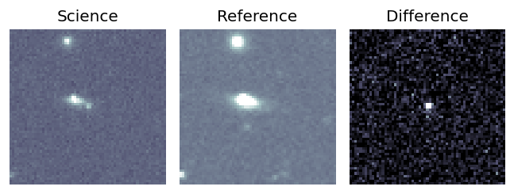
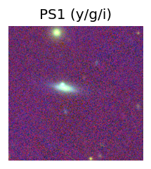
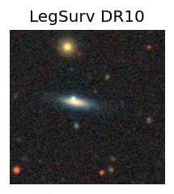
peak abs mag = -17.68 peak abs mag = -17.68 LegacySurvey: 1 sources in 3 arcsec Closest: d = 5.65 arcsec, 69.1 deg (east of north) photoz=0.05 (68% bounds 0.04, 0.06), type=SER peak abs mag = -17.21 (68% bounds -16.61, -17.73) 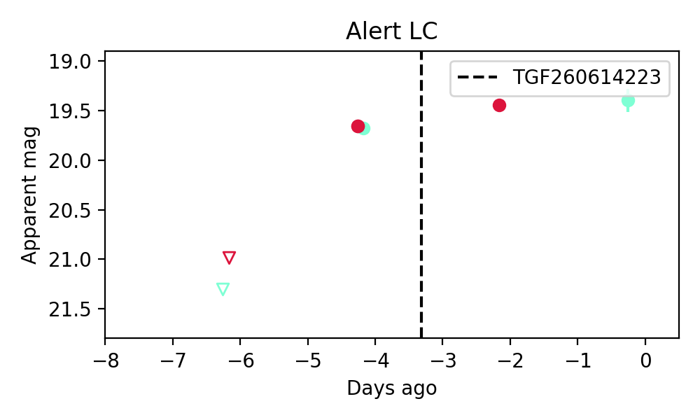
Consistent with synchrotron, g-r>0!
2. ZTF26abblsak (Afterglow?) [Back to Top] [Share] [Trigger Swift] [Fritz ] [Lasair ]RA, Dec: 250.31487, 39.28714 16h41m15.57s, 39d17m13.70sGalactic (l, b): 62.73391, 41.24614 ext(g-r) = 0.015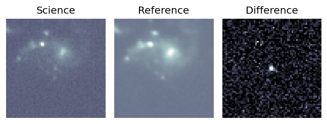
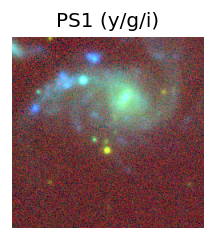
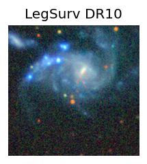
LegacySurvey: 1 sources in 3 arcsec Closest: d = 1.94 arcsec, 255.0 deg (east of north) photoz=0.98 (68% bounds 0.73, 1.18), type=PSF peak abs mag = -24.14 (68% bounds -23.37, -24.64) 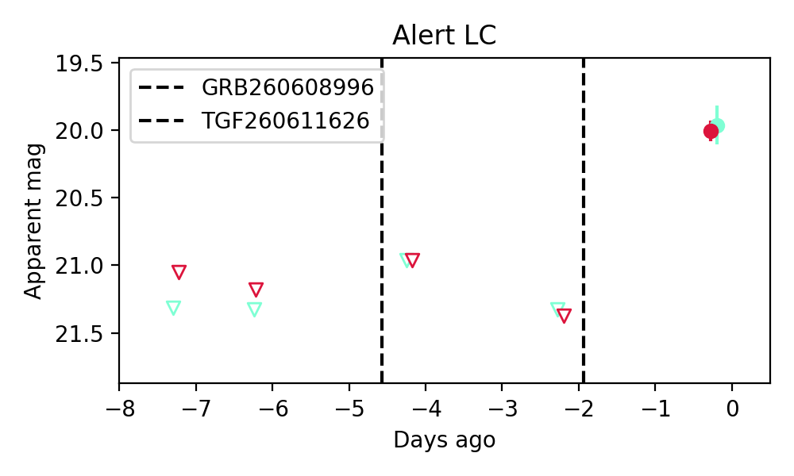
Consistent with synchrotron, g-r>0!
3. ZTF26abblziq (Afterglow?) [Back to Top] [Share] [Trigger Swift] [Fritz ] [Lasair ]RA, Dec: 245.76774, -11.18644 16h23m4.26s, -11d-11m-11.19sGalactic (l, b): 3.44805, 25.98183 ext(g-r) = 0.32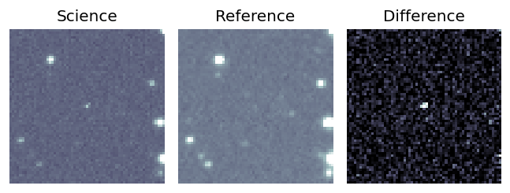
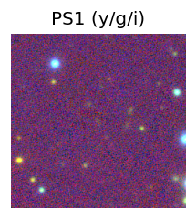
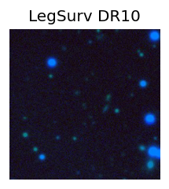
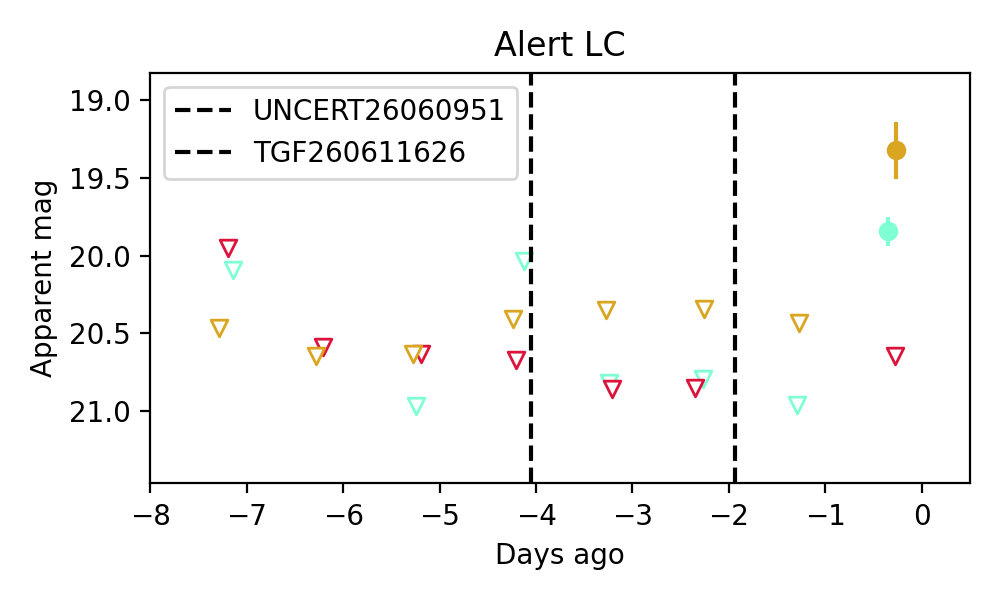
Consistent with synchrotron, g-r>0!
Section 2: Older Sources Observed Last Night (13)
0. ZTF26abamviv (Afterglow?) [Back to Top] [Share] [Trigger Swift] [Fritz ] [Lasair ]RA, Dec: 225.5719, 11.51105 15h 2m17.26s, 11d30m39.79sGalactic (l, b): 12.39871, 55.5645 ext(g-r) = 0.04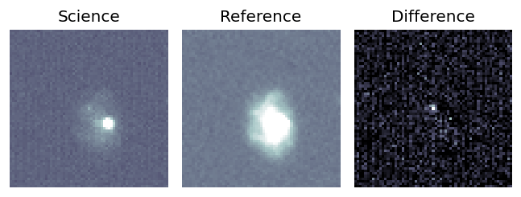
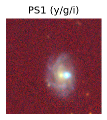
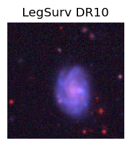
peak abs mag = -18.17 LegacySurvey: 1 sources in 3 arcsec Closest: d = 8.01 arcsec, 214.7 deg (east of north) photoz=0.04 (68% bounds 0.03, 0.04), type=SER peak abs mag = -17.46 (68% bounds -17.11, -17.82) 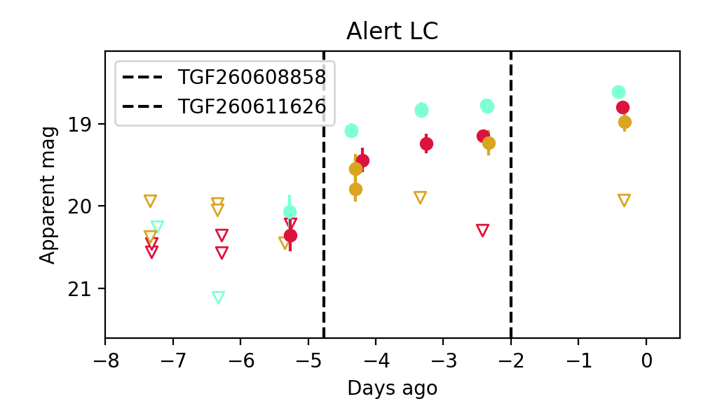
1. ZTF26abatjrk (Afterglow?) [Back to Top] [Share] [Trigger Swift] [Fritz ] [Lasair ]RA, Dec: 333.11822, -5.69258 22h12m28.37s, -5d-41m-33.30sGalactic (l, b): 55.20912, -46.56889 ext(g-r) = 0.075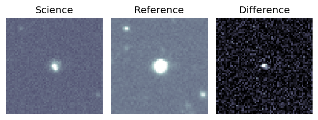
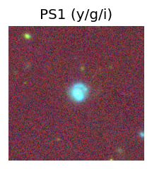
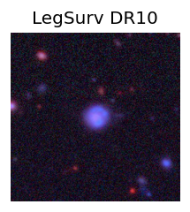
peak abs mag = -18.04 LegacySurvey: 1 sources in 3 arcsec Closest: d = 0.42 arcsec, 221.9 deg (east of north) photoz=0.02 (68% bounds 0.01, 0.03), type=SER peak abs mag = -15.51 (68% bounds -14.58, -16.33) 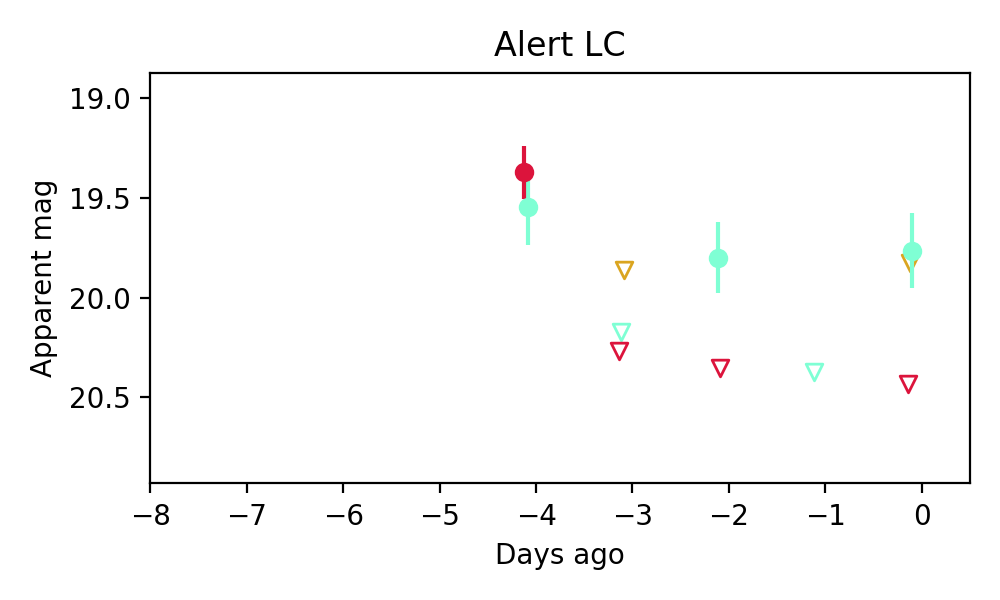
2. ZTF26abaxjou (FBOT?) [Back to Top] [Share] [Trigger Swift] [Fritz ] [Lasair ]RA, Dec: 196.93416, 8.98514 13h 7m44.20s, 8d59m6.52sGalactic (l, b): 315.67871, 71.45239 ext(g-r) = 0.031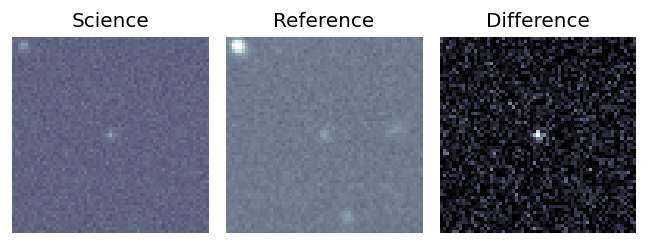
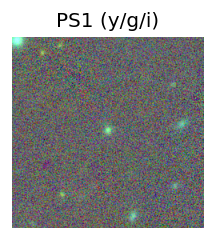
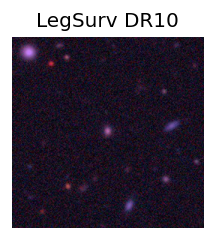
peak abs mag = -21.46 LegacySurvey: 1 sources in 3 arcsec Closest: d = 0.35 arcsec, 13.6 deg (east of north) photoz=0.33 (68% bounds 0.28, 0.4), type=SER peak abs mag = -21.85 (68% bounds -21.44, -22.31) 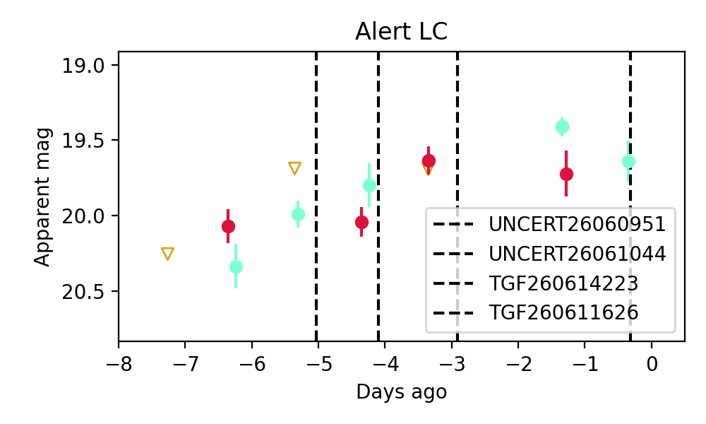
3. ZTF26abbbzjz (FBOT?) [Back to Top] [Share] [Trigger Swift] [Fritz ] [Lasair ]RA, Dec: 205.16502, 20.29708 13h40m39.60s, 20d17m49.51sGalactic (l, b): 4.3023, 76.83623 ext(g-r) = 0.028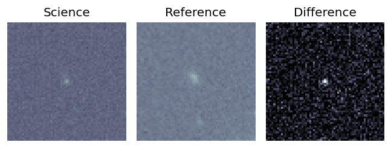
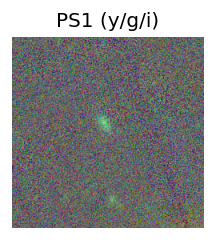
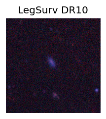
peak abs mag = -19.66 LegacySurvey: 1 sources in 3 arcsec Closest: d = 2.59 arcsec, 25.1 deg (east of north) photoz=0.08 (68% bounds 0.04, 0.13), type=SER peak abs mag = -18.12 (68% bounds -16.5, -19.37) 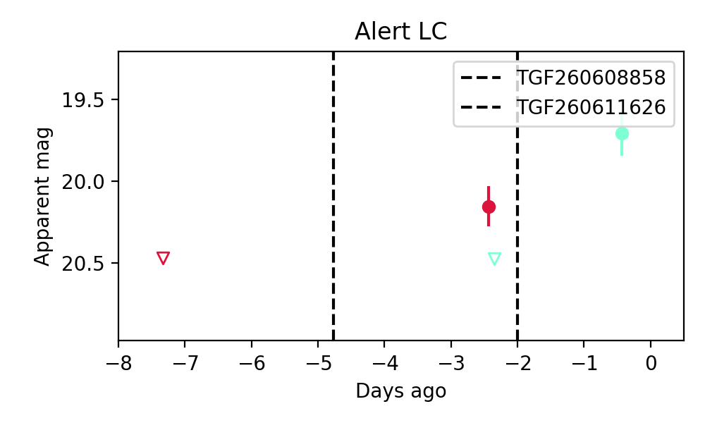
4. ZTF26abbgihv (Afterglow?) [Back to Top] [Share] [Trigger Swift] [Fritz ] [Lasair ]RA, Dec: 292.47011, 5.15903 19h29m52.83s, 5d 9m32.50sGalactic (l, b): 41.95003, -6.14131 ext(g-r) = 0.484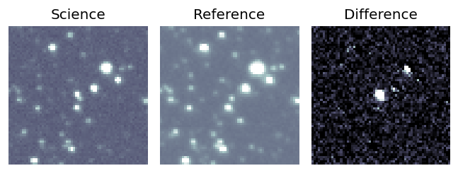
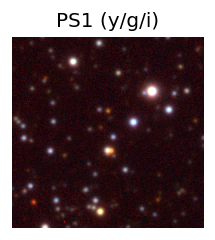
PS1: 1 source in 3 arcsec Closest: d = 2.32 arcsec photoz=0.34+/-0.19 peak abs mag = -24.54 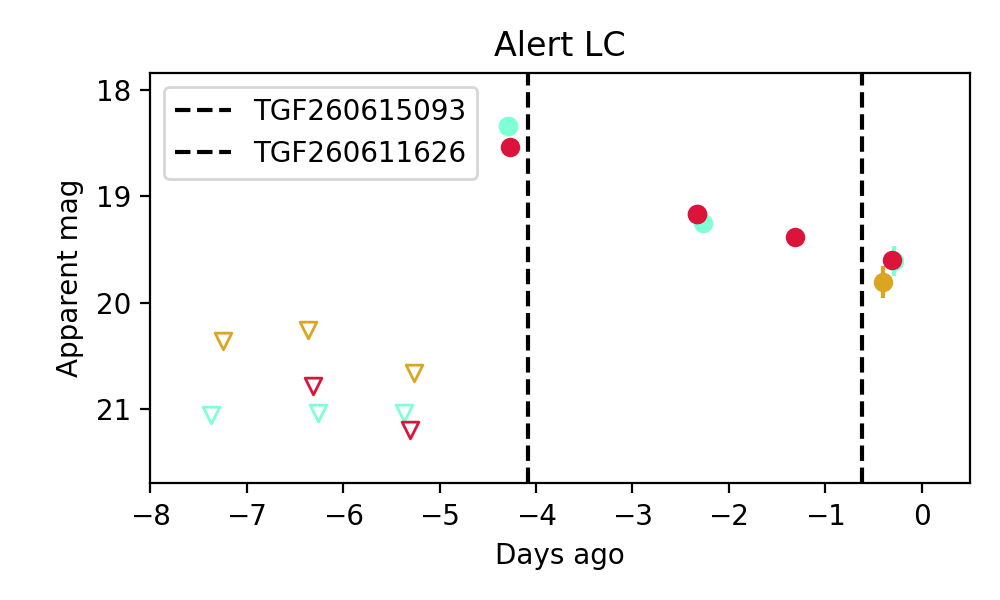
5. ZTF26abbjayz (Afterglow?) [Back to Top] [Share] [Trigger Swift] [Fritz ] [Lasair ]RA, Dec: 280.52866, -11.28661 18h42m6.88s, -11d-17m-11.80sGalactic (l, b): 21.82445, -3.08106 ext(g-r) = 0.84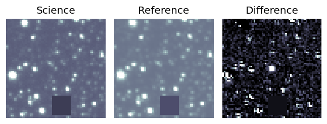
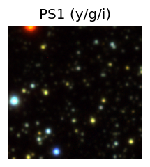
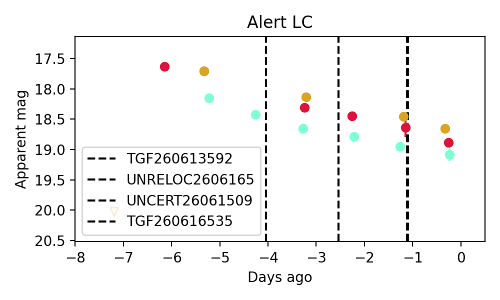
6. ZTF26abbkufc (FBOT?) [Back to Top] [Share] [Trigger Swift] [Fritz ] [Lasair ]RA, Dec: 212.52168, 0.58456 14h10m5.20s, 0d35m4.42sGalactic (l, b): 341.61012, 57.42674 ext(g-r) = 0.039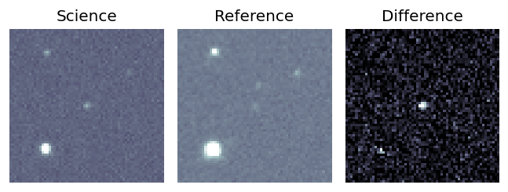
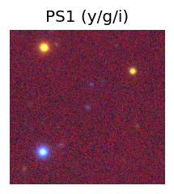
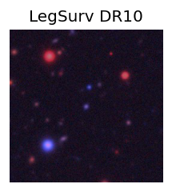
peak abs mag = -19.91 LegacySurvey: 1 sources in 3 arcsec Closest: d = 0.46 arcsec, 172.6 deg (east of north) photoz=0.12 (68% bounds 0.1, 0.15), type=REX peak abs mag = -18.98 (68% bounds -18.54, -19.57) 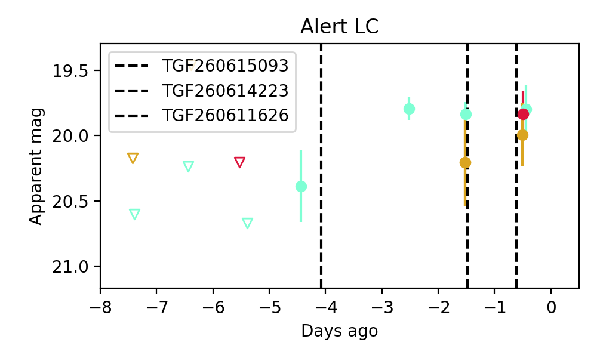
7. ZTF26abbkyzj (FBOT?) [Back to Top] [Share] [Trigger Swift] [Fritz ] [Lasair ]RA, Dec: 191.18425, 50.82066 12h44m44.22s, 50d49m14.39sGalactic (l, b): 125.56268, 66.27335 ext(g-r) = 0.015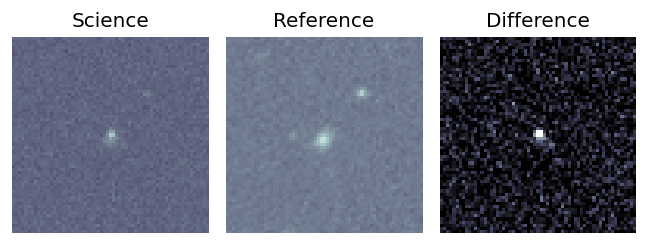
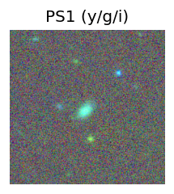
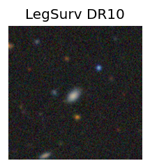
peak abs mag = -19.48 peak abs mag = -19.35 LegacySurvey: 1 sources in 3 arcsec Closest: d = 1.34 arcsec, 349.7 deg (east of north) photoz=0.36 (68% bounds 0.14, 0.82), type=REX peak abs mag = -21.96 (68% bounds -19.58, -24.09) 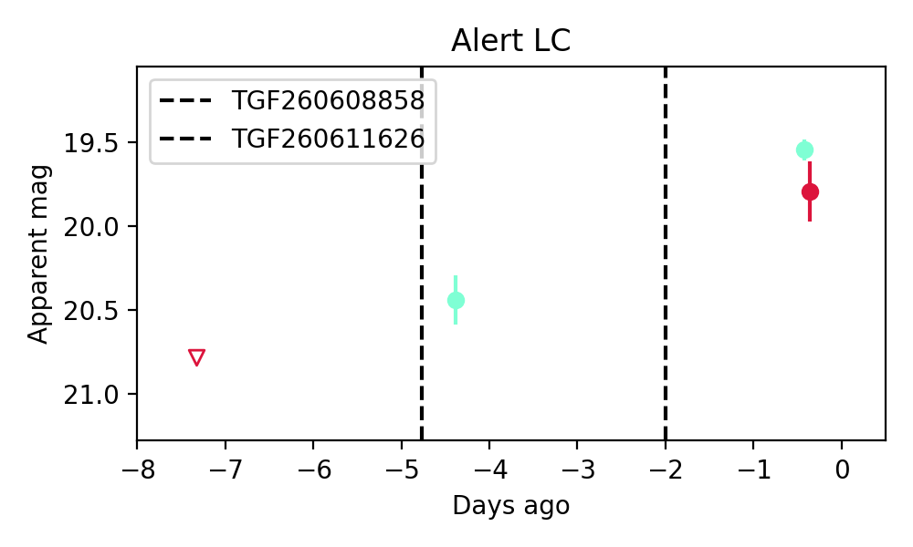
8. ZTF26abbleyq (FBOT?) [Back to Top] [Share] [Trigger Swift] [Fritz ] [Lasair ]RA, Dec: 215.3183, 23.09962 14h21m16.39s, 23d 5m58.63sGalactic (l, b): 26.68839, 69.29924 ext(g-r) = 0.032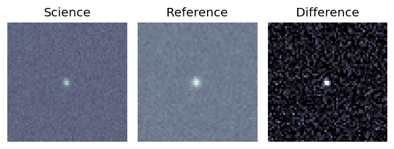
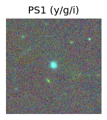
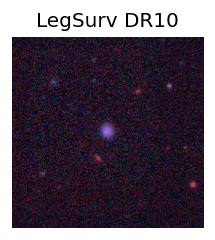
peak abs mag = -19.11 LegacySurvey: 1 sources in 3 arcsec Closest: d = 0.47 arcsec, 54.0 deg (east of north) photoz=0.17 (68% bounds 0.15, 0.21), type=REX peak abs mag = -19.66 (68% bounds -19.3, -20.07) 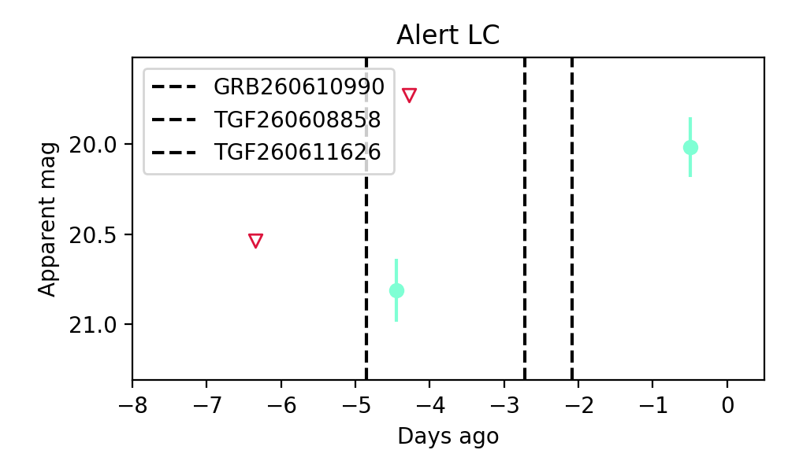
9. ZTF26abbllrh (FBOT?) [Back to Top] [Share] [Trigger Swift] [Fritz ] [Lasair ]RA, Dec: 214.73163, 37.57437 14h18m55.59s, 37d34m27.72sGalactic (l, b): 68.0077, 68.85197 ext(g-r) = 0.009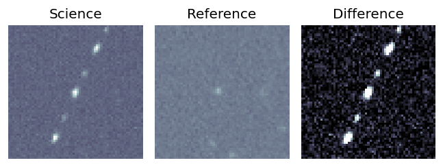
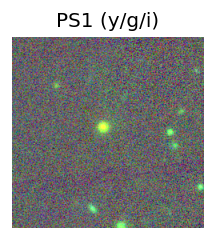
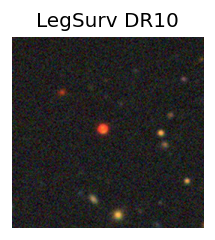
LegacySurvey: 1 sources in 3 arcsec Closest: d = 2.10 arcsec, 57.8 deg (east of north) photoz=0.12 (68% bounds 0.06, 0.34), type=PSF peak abs mag = -20.18 (68% bounds -18.43, -22.64) 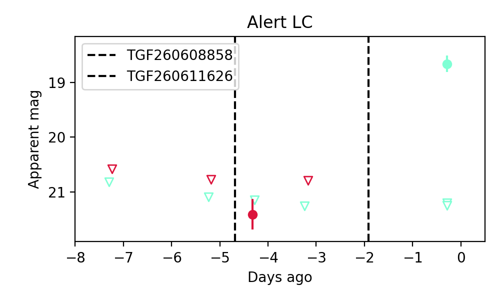
10. ZTF26abbnsai (FBOT?) [Back to Top] [Share] [Trigger Swift] [Fritz ] [Lasair ]RA, Dec: 306.76435, 7.17263 20h27m3.45s, 7d10m21.46sGalactic (l, b): 50.91635, -17.51073 ext(g-r) = 0.141PS1: 1 source in 3 arcsec Closest: d = 3.23 arcsec photoz=0.52+/-0.44 peak abs mag = -23.41
11. ZTF26abbodbi (FBOT?) [Back to Top] [Share] [Trigger Swift] [Fritz ] [Lasair ]RA, Dec: 286.61838, -3.95295 19h 6m28.41s, -3d-57m-10.61sGalactic (l, b): 31.11773, -5.14298 ext(g-r) = 1.005PS1: 1 source in 3 arcsec Closest: d = 2.13 arcsec photoz=1.11+/-0.19 peak abs mag = -26.68
12. ZTF26abbonlv (Afterglow?) [Back to Top] [Share] [Trigger Swift] [Fritz ] [Lasair ]RA, Dec: 288.8291, 3.8418 19h15m18.98s, 3d50m30.49sGalactic (l, b): 39.08309, -3.54314 ext(g-r) = 1.117PS1: 1 source in 3 arcsec Closest: d = 2.57 arcsec photoz=0.56+/-0.05 peak abs mag = -25.06